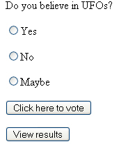

PHP Survey code
This lesson is part of an ongoing Survey/Poll tutorial. The first part is here: Build your own Survey/Poll, along with all the files you need.
In the previous section, you saw how to code for setting a question in your Survey. We'll now look at the Survey page.
The survey itslef can be found in the survey folder and is called survey.php. Open up this page in a browser by typing the following address:
127.0.0.1/survey/survey.php
You should see this:

All we have here is a question, and three possible answers. To vote, you select an answer and click the button. When you do, you're taken to another page which thanks you for voting. On the page, there is also a button that allows you to view the results. Let's see how it all works.
To see the code for the survey, open up survey.php in your text editor. The first line you'll see is this:
include 'sqlSurvey.php';
The include file is an important one. Open up this file (also in the survey folder), and you'll see that it's just a SQL command. This SQL is used to pull a question from the database.
The code is this:
$qNum = 'q4';
$SQL = "SELECT * FROM tblquestions WHERE tblquestions.QID = '$qNum'";
Only two lines long! The first line sets the question number. This is the QID field from the tblQuestions table. To set a new question, the only thing you have to change is this value. Try it. Change 'q4' to one of the other three values in the table: q3, q2, or q1. Save the file, and reload survey.php in your browser. You should see the question and answers change.
The important part of the SQL line is this:
WHERE tblquestions.QID = '$qNum'
We're saying select all the records WHERE the QID field matches the value in the variable called $qNum. That's enough to pull the question and answers from the table! But although the file is included on the first line, the code inside of it doesn't get run till a little later.
The next few lines just set up some variables, and put default values in them. After that, we add the code that opens up the database. You've met all this before, so we won't go into it.
The part of the code that uses the include file is this:
$result = mysql_query($SQL);
The variable called $SQL is in the include file. The survey code can see this variable because of the include directive. So it knows what's inside of it.
If mysql_query( ) succeeds, we can put the values into an array with the next line (though you should write could for false values inside of $result):
$db_field = mysql_fetch_assoc( $result );
The data from the SQL is then placed into an array called $db_field. You can get at these values like this:
$qID = $db_field['QID'];
$question = $db_field['Question'];
$A = $db_field['qA'];
$B = $db_field['qB'];
$C = $db_field['qC'];
Here, we're returning the values from the following fields in the table: QID, Question, qA, qB, and qC. We've put these into variables of their own.
Once we have the question and the answers, we can put these into the HTML on the page. There are two HTML forms on the page. The first is this:
<FORM NAME ="form1" METHOD ="GET" ACTION ="process.php">
<?PHP print $question; ?>
<P>
<INPUT TYPE = 'Radio' Name ='q' value= 'A' <?PHP print $answerA; ?>><?PHP
print $A; ?>
<P>
<INPUT TYPE = 'Radio' Name ='q' value= 'B' <?PHP print $answerB; ?>><?PHP
print $B; ?>
<P>
<INPUT TYPE = 'Radio' Name ='q' value= 'C' <?PHP print $answerC; ?>><?PHP
print $C; ?>
<P>
<INPUT TYPE = "Submit" Name = "Submit1" VALUE = "Click here to vote">
</FORM>
The question from our code is placed on the page with this line:
<?PHP print $question; ?>
This is the value that we got from the field in the tblQuestions table.
The code for the answers is then added to the radio button on the form:
value= 'A' <?PHP print $answerA; ?>><?PHP print $A; ?>
The "print $answerA" part will just add a value of checked or unchecked to the radio button, depending on whether it was selected or not. An answer is added to the radio button like this:
<?PHP print $A; ?>
Whatever data we pulled from the A "field" in the table will end up in the variable called $A. This is then printed to the page.
If the button is clicked, though, we're sending it to a page called process.php. We'll take a look at that in a moment, but notice the second Form on the page:
<FORM NAME ="form2" METHOD ="GET" ACTION ="viewResults.php">
<INPUT TYPE = "Submit" Name = "Submit2"
VALUE = "View results">
<INPUT TYPE = "Hidden" Name = "h1" VALUE = <?PHP print
$qID; ?>>
</FORM>
This is for the "View Results" page. When this button is clicked, it goes to a new page: viewResults.php. But there is a crucial HTML form element in the form code:
<INPUT TYPE = "Hidden" Name = "h1" VALUE = <?PHP print $qID; ?>>
This sends the QID number to the viewResults page. We can then use this value to pull the correct records from the two tables. You'll see how this works soon. But one more thing to notice: both forms use the GET method to hand data to the next page. Now let's move on to the code for the process.php page.